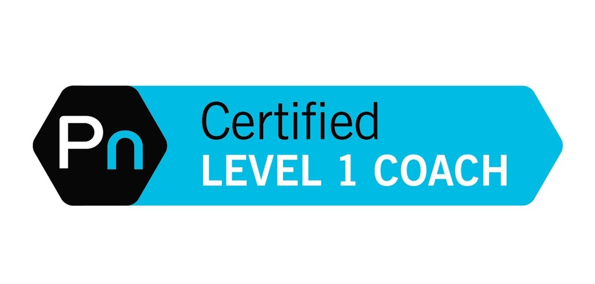

Saint Louis University
I just got out of high school and was ready to escape my small suburban town for the city. I could not pass up the opportunity to attend such a prestigous university. I thought I knew exactly what I wanted to major in-Dietetics. I absolutely thought I knew how to appoach school and studying. Haha, I think we both can agree the first six months of college is very englightening in terms of new freedom, new friends, and establishing habits of time management, discipline, and perseverance. I spent 6 months at SLU and decided this pre-med track of study was not for me. Let's be honest, I was young and had no idea what to commit to just yet.
Southern Illinois University Edwardsville
Let's face it, I definitely had some soul searching to do. I came back to my hometown for a more affordable education. I immediately fell in love with SIUE. There was a lot less pressure and surprisingly a more diverse community.I finished my general studies and progressed towards a "safe" but versatile Bachelor of Science in Business Administration and Marketing.
Working for that weekend!
What better way to make a little change, yes change, and get a little exposure to potential industries. I have always had a passion for food, health, and people. I figured the best option would be to gravitate towards companies that portrayed that mission. I always loved the customer experience when going into Panera Bread Company formerly known as St.Louis Bread Company. I excelled there working on the food line and interacting with customers in a fast- paced environment. At the same time, I wanted to keep exploring the health and fitness field and applied for a position in the YMCA Fitness Center.
YMCA/Food Creation
I really enjoyed my time at the YMCA and spent most of my college career working there as a fitness instructor. I finished my Business degree but did not feel I was ready to be done with my education. I was fascinated by the ability to change the body into a high performing functional machine. I wanted the highest level of education and to eventually pursue a fitness business of my own. Also, I wanted to stand out and become really knowledgeable about nutrition and cooking. I spent everyday in my kitchen experimenting with cooking methods,learning about healthy grocery shopping, and meal preparation. I knew I would need formal education to achieve this.
Backkkk to School..Back to School...to prove...
I applied to SIUE's program for a Master of Science in Exercise Physiology. I had to catch up to my fellow peers who had already compeleted the anatomy and physiology pre- requisites.I managed to get through the labs and actually started thriving my classes. I thoroughy enjoyed the curriculum and acheived a solid foundation in the field. Upon graduation, I could either choose a clinical route to work in Cardiac Rehab with patients or to work in corporate Health and Fitness. It turned out that the Midwest was not an area of ample opportunity or great pay for this field. I did not want to move away from my family either. So what could I do?! I needed a livable wage.
Boosting my Education and more
This part of my life was the struggle. I knew I needed to make myself more valuable in my field and start my business to get an idea of this occupational lifestyle. I achieved the top certification in my field as a certified American College of Sports and Medicine Exercise Physiologist. I wanted the top nutrition certification in the industry as well and pursued Dr. Berardi's Precision Nutrition Course. At this point, I have the top tier certification of both fitness and nutrition. I started training clients independently and working at my local nutrition store in town. I quickly found out that adulting was going to take a lot more income and this age was not the best time to pursue this dream primarily.
ADULTING:BILLS,BILLS, AND BILLS...
I knew I was going to need more financial stability in my life to survive. I applied to jobs for months and months in my field and outside my field but still in customer service. Unfortunately, I had to decline the offers in the fitness industry due to such low wages. I fell back on my business degree a bit and came across a job listing for the Tech Industry. I applied without the notion of getting it, but thought, "hey its worth a try". Little did I know, this decision and following experience would pave the way for where I am now.
Square, Inc.
I got it! I got the position! My first days at Square as a Customer Support Representative were incredible. I was a small town suburban girl walking into an office that screamed Midwest Silicon Valley. I was handed my very own MacBook Air and after training hit the floor running ready for those customer service calls. I loved my lead, my team, and the overall culture. We also had the opportunity to learn about growth opportunities within the company. LaunchCode came to visit and hosted HelloWorld! I quickly became fascinated and wanted to apply to LC101. Our office grew very quickly and scheduling became more stringent. I enjoyed being the first point of contact with customers but grew to wanting to be more so part of the solution. I would write JIRA tickets to our engineers documenting the bugs. I was forever curious about their workflow and the satisfaction of providing that solution. I applied to LaunchCode just to see if I could get in. I was denied with my first attempt but could not meet the scheduling anyways while being at Square and commuting. I decided to resign in order to gain some time back to dedicate to increasing my skillset and further my career in tech.
I have arrived!!LaunchCode

I personal trained and worked restaurant jobs in the meantime while exploring coding online. I already knew I loved the tech industry culture and wanted more. Finally, I applied to LaunchCode this year and made it in! I will always have a passion for health and fitness considering that as rather my "passion project". I am so happy and grateful to have the opportunity to be here after such a winding road of exploration. I am really interested in specializing in front end development and to eventually be a full stack developer. However, I know I am new to this industry and there are so many avenues to explore which is the most beautiful part about it. I am a lifelong student and explorer which is perfect for this role.